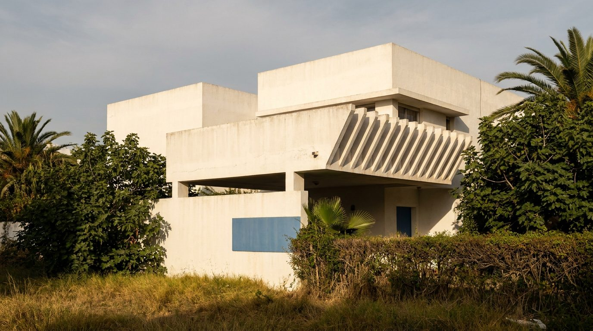
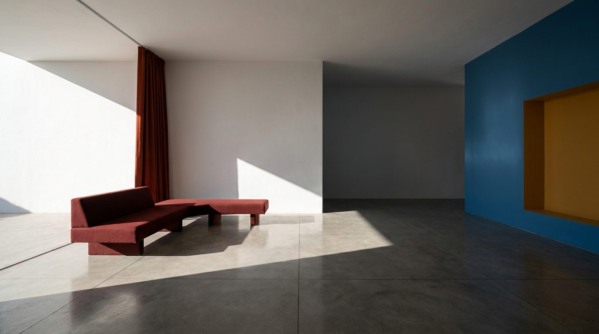

Atlante · INT-MA-02 · Marocco · Africa
Villa atlantica razionalista ad Anfa, bianco e blocchi di colore
Esempi · esterno e interno


Perché funziona
A Casablanca il compratore è urbano e cosmopolita: compra una casa bianca con vista atlantica e vuole che l'interno sia altrettanto deciso, non etnico. Questa voce dà a Poetica il polo loud dell'Africa del Nord senza passare dal riad, e permette di fotografare il prodotto su campi di colore pieni, dove conta la planarità della lacca e non il dettaglio. Il made in Italy entra come esattezza del profilo e del giunto, non come ceramica o ottone martellato. Non deve diventare un set anni Cinquanta da rivista: niente mobili firmati citati, niente palme in vaso, niente zellige.
Architettura · elementi riproducibili
- soggiorno 7,5x5,5 m, altezza 3,0 m, aggetto 1,8 m sul terrazzo verso l'oceano
- pareti in intonaco di calce bianco, spessore 15 mm, spigoli vivi, nessun battiscopa
- pavimento in cemento levigato 1200x1200 mm, giunto 3 mm, opaco, senza fughe a vista
- infissi in acciaio a profilo 35 mm, luce netta 3,6x2,2 m, traverso a 2,0 m
- parete di fondo 4,2x3,0 m laccata blu atlantico, nicchia 1,2x2,4 m in ocra gialla
- tenda in lana h 2,8 m, piega ogni 120 mm, binario incassato nel soffitto
- proporzione chiave: 55% bianco, tre campi saturi (blu, rosso ossido, ocra) sul resto
Fatto verificato: Jean-François Zevaco (1916-2003), architetto franco-marocano nato a Casablanca, è figura emblematica del movimento moderno in Marocco; le sue ville bianche con grandi aggetti e frangisole netti furono giudicate scandalose per il contrasto con l'architettura neomoresca dell'amministrazione coloniale e per l'audacia nell'uso del cemento (Wikipedia, Jean-François Zevaco).
Fatto verificato: Villa Zevaco, già Villa Sami Suissa, costruita da Zevaco per il costruttore Sami Suissa e oggi ristorante, si trova nel quartiere Anfa di Casablanca (e-architect).
Fatto verificato: Anfa è oggi un distretto di Casablanca di 37,5 km² con 344.000 abitanti al 2024 (Wikipedia, Anfa).
Valutazione: l'ipotesi iniziale di una villa atlantica generica è stata precisata sul tipo razionalista di Anfa; il registro loud arriva dal colore pieno e non dal decoro, così il contrasto con il riad di Marrakech (int-ma-01) resta netto.
Luce
Prompt di generazione (EN)
Interior of a 1950s rationalist villa in the Anfa district of Casablanca, empty except for one low bench in oxblood wool. White lime-plaster walls, matt, sharp arrises, no skirting; floor of large polished concrete slabs with a 3 mm joint; one end wall painted flat Atlantic blue, a recessed niche 1.2 m wide in flat ochre, a full-height red-oxide wool curtain. A single key light: hard western sun at 25 degrees, 5600 K, entering under a 1.8 m overhang and cutting a clean diagonal band across the floor, the room beyond falling three stops into cool shadow. 24 mm lens, camera at 1.5 m, two-point perspective, verticals parallel. Grade neutral, white held just below clipping, all colour flat and unmodulated. no people, no text, no logos